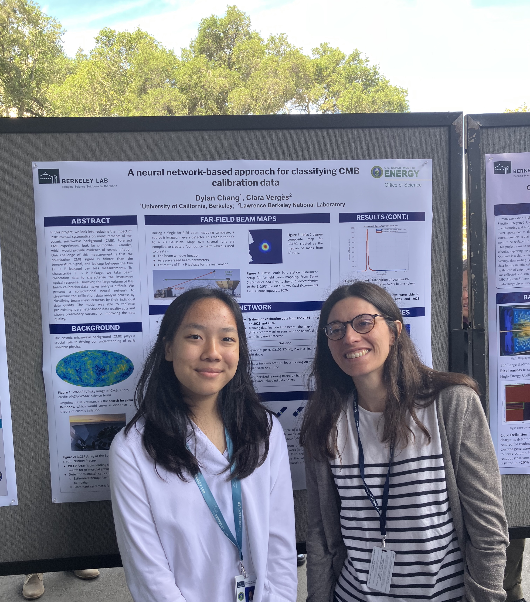

Dylan Chang presents her poster
UC Berkeley undergraduate Dylan Chang presented her research poster on developing AI/ML tools for CMB calibration data at the LBNL SULI students poster fair. Great job this summer!

UC Berkeley undergraduate Dylan Chang presented her research poster on developing AI/ML tools for CMB calibration data at the LBNL SULI students poster fair. Great job this summer!

Veronica Hoffman joins the group as a DOE SULI intern for Summer 2025 to work on CMB-S4 bandpass systematics modeling.
Our BICEP/Keck collaboration paper, "BICEP/Keck XVIII: Measurement of BICEP3 polarization angles and consequences for constraining cosmic birefringence and inflation", has been published! Read the paper on arXiv:2410.12089.